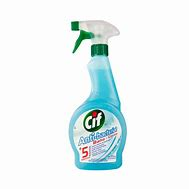

R$ 200
Desinfetantes são substâncias que são aplicadas em superfícies não vivas para destruir os microrganismos que vivem nesses objetos. A desinfecção não mata, necessariamente, todos os microrganismos, em especial as formas esporuladas de bactérias; sendo menos eficaz que a esterilização, que é um processo extremo químico ou físico que mata todos os tipos de vida.